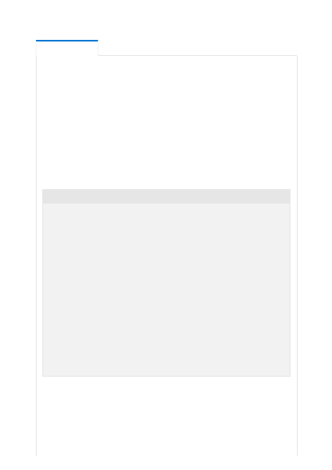

The GPT-4, GPT-3, and Codex Azure OpenAI Service models use natural language
instructions and examples in the prompt to identify the task. The model then
completes the task by predicting the most probable next text. This technique is
known as "in-context" learning. These models are not retrained during this step but
instead give predictions based on the context you include in the prompt.
There are three main approaches for in-context learning. These approaches vary
based on the amount of task-specific data that is given to the model:
Few-shot : In this case, a user includes several examples in the prompt that
demonstrate the expected answer format and content. The following example
shows a few-shot prompt providing multiple examples:
The number of examples typically ranges from 0 to 100 depending on how many
can fit in the maximum input length for a single prompt. Few-shot learning enables
a major reduction in the amount of task-specific data required for accurate
predictions.
One-shot : This case is the same as the few-shot approach except only one example
is provided. The following example shows a one-shot prompt:
Capabilities
Convert the questions to a command:
Q: Ask Constance if we need some bread
A: send-msg `find constance` Do we need some bread?
Q: Send a message to Greg to figure out if things areready for
Wednesday.
A: send-msg `find greg` Is everything ready forWednesday?
Q: Ask Ilya if we're still having our meeting thisevening
A: send-msg `find ilya` Are we still having a meetingthis evening?
Q: Contact the ski store and figure out if I can getmy skis fixed before
I leave on Thursday
A: send-msg `find ski store` Would it be possible toget my skis fixed
before I leave on Thursday?
Q: Thank Nicolas for lunch
A: send-msg `find nicolas` Thank you for lunch!
Q: Tell Constance that I won't be home before 19:30tonight — unmovable
meeting.
A: send-msg `find constance` I won't be home before19:30 tonight. I have
a meeting I can't move.
Q: Tell John that I need to book an appointment at10:30
A: